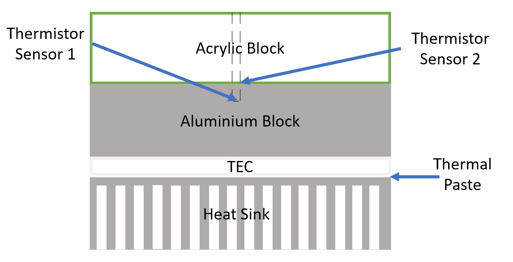
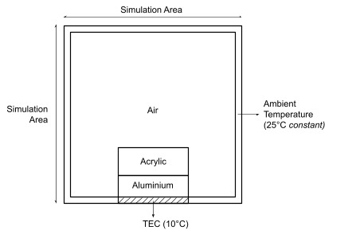
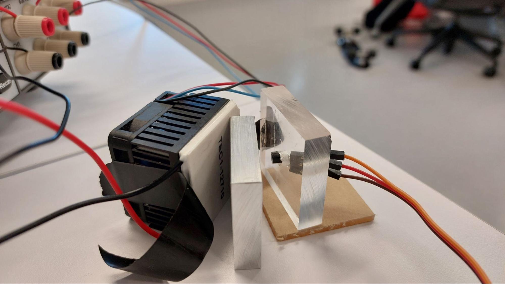

2D Heat Equation Simulation
Tags: Heat Equation, Simulation, Python, Numerical Methods
For my Computational and Data-Driven Engineering module in term 5, my
team was tasked to predict the temperature at the center of an
aluminum block that was being cooled by a Thermo-electric Cooler (TEC)
controller, using the surface temperature of the aluminum block.

For this module, we were constrained to using numerical methods and
thus I used the multivariable explicit method where the derivative
terms in the heat equation were substituted with first order forward
difference and second order central difference. Using python to code
the simulation program, I split the simulation space into cells and
set the boundary conditions.

The simulation space was split into a 100 x 100 grid. The
temperatures at the edges were locked at 25°C to simulate ambient
temperature, the TEC was first locked at 10°C. The air, acrylic and
aluminum initially was at ambient temperature. The diffusivity
constant of air, acrylic and aluminum were obtained online and used to
simulate the temperature changes of each cell in the grid.


The experiment was also performed and the temperature data was
obtained and compared. However, there was a large discrepancy in the
results due to the fact that the TEC was not able to keep the
temperature at the assumed 10°C. Thus, instead of using a fixed
temperature, the simulation was re-run this time using the actual
empirical temperature data of the TEC. The result was a similar curve
to the actual experiment. The simulated data was then used to predict
the temperature at the center of an aluminum block using the surface
temperature of the aluminum block.